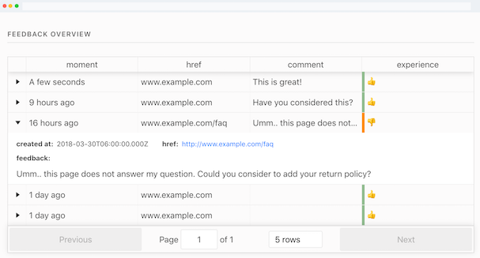

open form.
is an open source, self hosted feedback gathering tool.

What you get is what you see in the right lower corner.
Embed a snippet on any kind of website and your users will get the feedback button.
You can view the given feedback on a private page.
